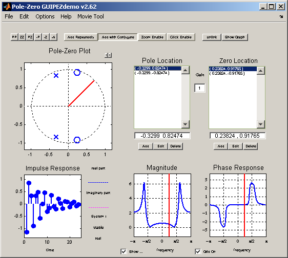

|  |
The Pole-Zero Editor is a program that helps visualize the effect of pole-zero placements on a system's frequency and impulse response.
Features:
- Users can add poles, zeros both by mouse click and editing specific poles/zeros.
- Poles/Zeros can be moved around in the z-plane by selecting them and pulling the mouse around, with instant update of the system's frequency/impulse response.
- Poles/Zeros can also be imported from an external file or exported to an external file.
- Poles/Zeros can be specified indirectly through the system transfer function or filter coefficients. Option to enter them through edit fields or import from an external file are available.
- Color code to indicate system stability/complexity is also provided in the tool.
- Various plot options enable the tool to be effectively used as a lecture aid in a classroom environment.i.e., the width and color of lines in the plots can be changed. Option to 'zoom-in' is also provided.
|